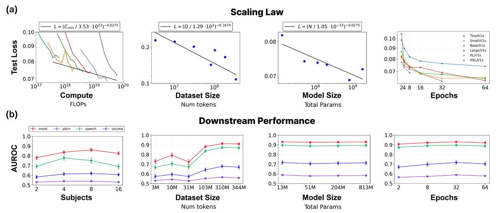
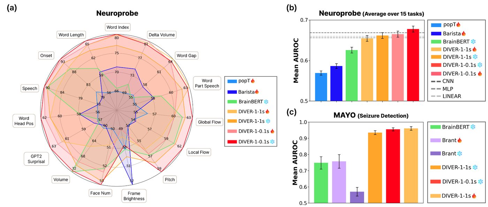

DIVER-1.5
A new self-supervised recipe for iEEG. More soon.
ECoG · left hemisphere · live
decoder 12 ms
Simulated signals. Try it: hover the traces, click them to evoke a response, touch an electrode on the brain, or pick an intent to imagine it.
I'm a PhD candidate in Artificial Intelligence at Seoul National University, advised by Prof. Jiook Cha, and a visiting scholar in Uri Hasson's lab at Princeton. I founded and lead the DIVER team, which builds foundation models for intracranial brain recordings (iEEG). We work closely with neurosurgery teams at Seoul National University Hospital and the University of Minnesota, so that the models are trained on, and tested against, real clinical data.
My research asks how far self-supervised learning and scale can take neural decoding across patients, electrodes and tasks, and how brain activity lines up with speech and language models.
I'm a Presidential Science Scholar (Korea, 2025) and was a Samsung Science Scholar as an undergraduate. I graduated summa cum laude in physics from Sungkyunkwan University, with an exchange term at the University of British Columbia.
Interested in collaborating? Write to me at dyhan0316 [at] gmail [dot] com.
What the DIVER team is working on now.
A new self-supervised recipe for iEEG. More soon.
Scaling pretraining across hospitals and countries, toward a model that works for new patients out of the box.
More soon.
More soon.
Where research has taken me since November 2025, from my location history. Cities only, with approximate positions.
* equal contribution · † corresponding author
IEEE MLSP 2026
CCN 2026
ICML 2025 Workshop on Generative AI and Biology (GenBio)
arXiv preprint (2025)


arXiv preprint (2026)